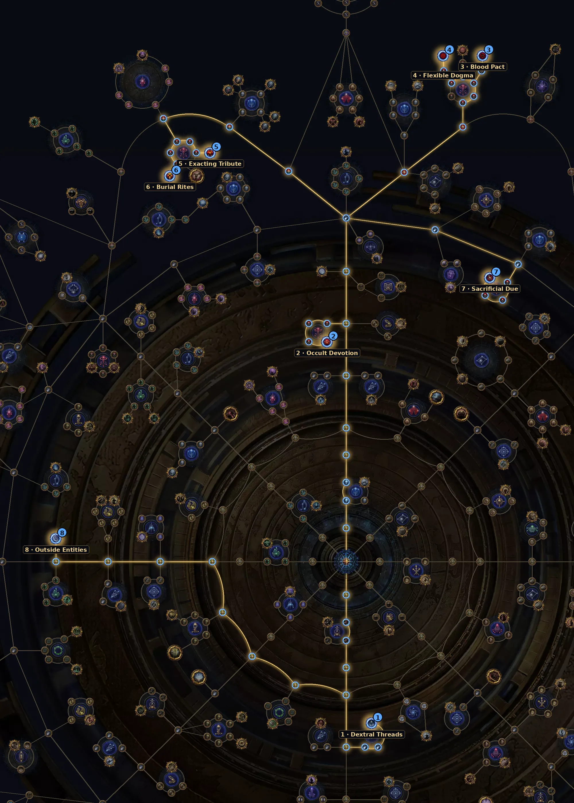

Altares onde você mata monstros dentro de um círculo e troca o Tribute por recompensas. Na 3.30 depende de Ritual Threads, o reroll garante Omen e a Viridian Wildwood dá +50% de Tribute.
| Item | Como usar |
|---|---|
| Threads | 1–3 nos mapas amarelos; 4+ com 2 Vessels nos vermelhos; 8 com 3 Vessels no endgame. |
| Viridian Wildwood | Wisp's Blessing dá +50% de Tribute (antes 30%), e a wisp teleporta bem menos. |
| Opulent Rituals | Dão mais rarity em vez de quantidade: combina com o loot novo. |
| King in the Mists | Sempre solta uma base de Ritual de item level 85 ou 86. |
Árvore oficial da 3.30 (a GGG publicou antes da liga). Caminho a partir do centro: 43 pontos para os essenciais e +14 para os extras. A árvore tem 150 pontos no total. Some com a base de sustento (36 pontos).
| Nó | O que faz |
|---|---|
| 1 Dextral Threads Essencial | Escolha a Thread da sua mecânica (Ritual, Ultimatum, Expedition ou Breach): +200% de chance de cair desse tipo. |
| 2 Occult Devotion Essencial | Mapa com Ritual sempre tem 4 altares. |
| 3 Blood Pact Essencial | Os altares oferecem 30% mais recompensas. |
| 4 Flexible Dogma Essencial | +2 rerolls de recompensa, e 1 reroll grátis. |
| 5 Exacting Tribute Essencial | Monstros revividos perdem menos Tribute e uniques no altar dão o dobro. |
| 6 Burial Rites Essencial | +50% de recompensas especiais e um Rare Itemised Corpse a mais. |
| 7 Sacrificial Due Extra | 25% de chance do último altar soltar um Blood-filled Vessel. |
| 8 Outside Entities Extra | Escolha a mecânica terciária: Viridian Wildwood (Ritual), Demonic Evocator (Beyond), Delirium, Mirage ou Buried Sentinel. |
Abrir no site oficial (árvore do Atlas)
Nós de escolha (Thread, exército, líder etc.) aparecem marcados no link; escolha a opção indicada na tabela ao clicar neles.

Precisa de dano em área e de boa defesa para o último altar.
Do site: RF Chieftain, Toxic Rain, Poison SRS.
Ver vídeos da 3.30 no YouTube
Busca pronta pela 3.30. A árvore do Atlas saiu antes da liga; os vídeos de farm da 3.30 começam a aparecer a partir do lançamento (13/11).